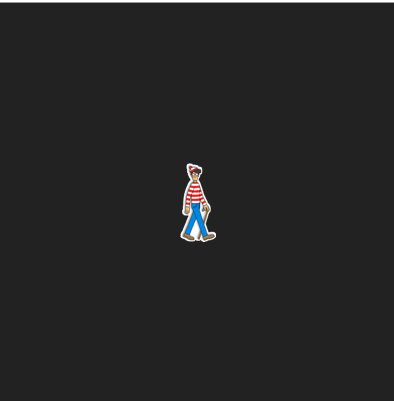

Introduction To
Zero Knowledge Proofs
aka ZKPby Raymond Yeh
What are
Zero Knowledge Proofs
I'm going to proof to you that I know something, without telling you what is it!
Let's play a game...
Now seriously...

Proof to me a solution exists
I cut a huge stencil...

...and place it over the puzzle
You are convinced that I know the solution, without knowing the solution itself.
Applications of ZKP
Age Restrictions
Proof that you are over the an age limit without revealing your actual age.
Anonymous Verifiable Voting
Proof that one has the rights to cast a vote, the vote has been included, and the vote tally is correct. All without revealing identity of voters.
KYC (Whitelist)
Proof that an entity belongs to a set of valid values, while preserving the entity's privacy
KYC (Blacklist)
Proof that an entity does not belong to a set of blacklisted entities.
Board Membership
Construction of ring signatures where one can verify that the message comes from the group without revealing who the person is.
Accountancy
Proof that the computation of the balance sheet is correct without showing all items on the sheets.
Common Reporting Standards (CRS)
Proof that a financial document passes validation such as enumeration or integer ranges.
Solvency
Proof that a financial institute has sufficient reserves to settle at least x% of accounts.
And More...
https://arxiv.org/pdf/1907.06381.pdfLay of the Land
Where Do We Come From? What Are We? Where Are We Going?State of ZKP
 High-Level languages for zkSNARKs, Fully-Homomorphic-Encryption
and Multi-Party-Computation
High-Level languages for zkSNARKs, Fully-Homomorphic-Encryption
and Multi-Party-Computation
ZK-SNARKS
Zero-Knowledge Succinct Non-Interactive Argument of KnowledgeSuccinct
- Proofs verified within a few milliseconds
- Proof length of only a few hundred bytes
Non-Interactive
Proof consists of a single message sent from prover to verifierConstruction

Writing ZKP Application
Choose your language
Blue Pill - Zokrates
- High level ZKP library
- Lower learning curve
- Tutorial sucks less
- Deployed on Ethereum
Red Pill - Zircom
- Low level ZKP library
- High learning curve
- Tutorial sucks
- ZKP ≠ blockchain
- Test in JS
- JS library for web app
End
- https://github.com/yehjxraymond/circom-experiment
- https://github.com/yehjxraymond/zokrates-experiment